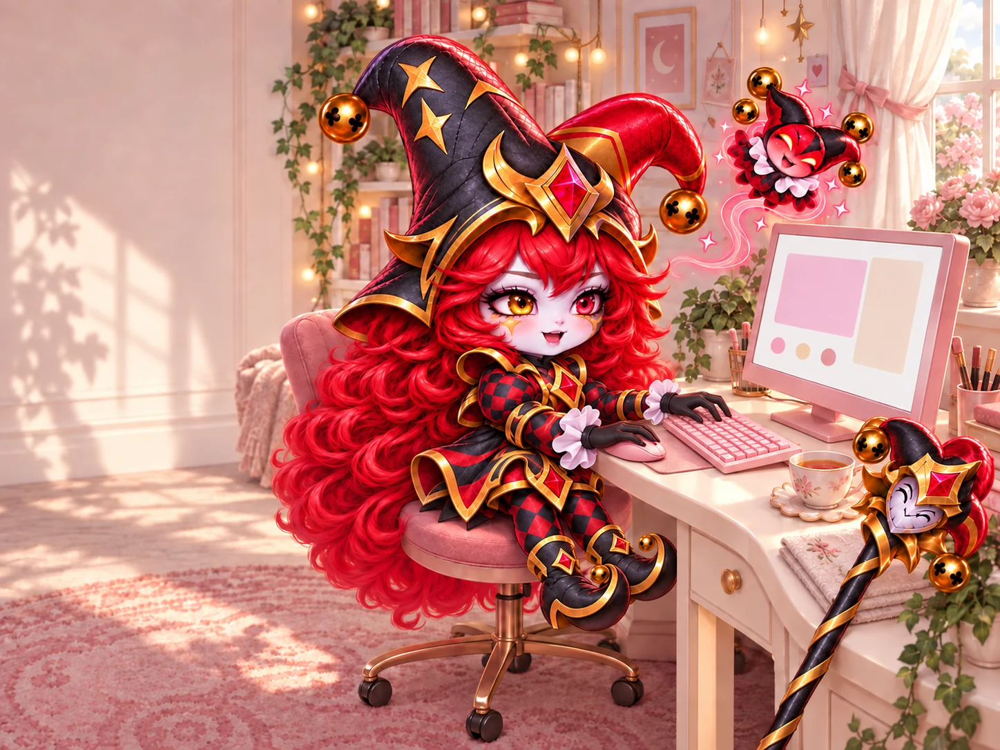
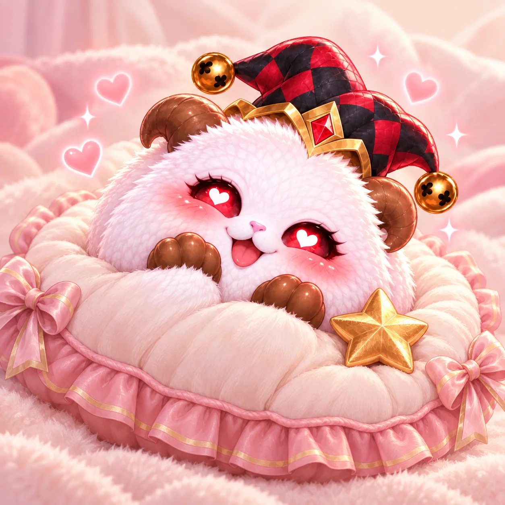

Заходи,располагайся)

Здесь текст, записанный в этом браузере. Скопируй его или скачай, чтобы перенести на другое устройство или прислать в рабочий чат.
Браузер не разрешил сохранить запись. Пока вкладка открыта, текст остаётся в памяти. После обновления он может пропасть. Можно сохранить копию текста или продолжить писать.
Чтобы открывать папки, включи JavaScript. Twitch Пососони · Написать Вике